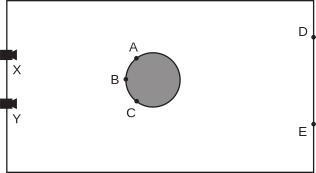

24.1 In the shadow of a tree with a dense, leafy canopy, one sees a number of light spots. Surprisingly, they all appear to be circular. Why? After all, the gaps between the leaves through which the sun shines are not likely to be circular.
24.2 Consider a picture of a white sphere floating in front of a black backdrop. The image curve separating white pixels from black pixels is sometimes called the “outline” of the sphere. Show that the outline of a sphere, viewed in a perspective camera, can be an ellipse. Why do spheres not look like ellipses to you?
24.3 Consider an infinitely long cylinder of radius $r$ oriented with its axis along the $y$-axis. The cylinder has a Lambertian surface and is viewed by a camera along the positive $z$-axis. What will you expect to see in the image if the cylinder is illuminated by a point source at infinity located on the positive $x$-axis? Draw the contours of constant brightness in the projected image. Are the contours of equal brightness uniformly spaced?
24.4 Edges in an image can correspond to a variety of events in a scene. Consider Figure illuminationfigure (page illuminationfigure), and assume that it is a picture of a real three-dimensional scene. Identify ten different brightness edges in the image, and for each, state whether it corresponds to a discontinuity in (a) depth, (b) surface orientation, (c) reflectance, or (d) illumination.
24.5 A stereoscopic system is being contemplated for terrain mapping. It will consist of two CCD cameras, each having ${512}\times {512}$ pixels on a 10 cm $\times$ 10 cm square sensor. The lenses to be used have a focal length of 16 cm, with the focus fixed at infinity. For corresponding points ($u_1,v_1$) in the left image and ($u_2,v_2$) in the right image, $v_1=v_2$ because the $x$-axes in the two image planes are parallel to the epipolar lines—the lines from the object to the camera. The optical axes of the two cameras are parallel. The baseline between the cameras is 1 meter.
If the nearest distance to be measured is 16 meters, what is the largest disparity that will occur (in pixels)?
What is the distance resolution at 16 meters, due to the pixel spacing?
What distance corresponds to a disparity of one pixel?
24.6 Which of the following are true, and which are false?
Finding corresponding points in stereo images is the easiest phase of the stereo depth-finding process.
Shape-from-texture can be done by projecting a grid of light-stripes onto the scene.
Lines with equal lengths in the scene always project to equal lengths in the image.
Straight lines in the image necessarily correspond to straight lines in the scene.
24.7 Which of the following are true, and which are false?
Finding corresponding points in stereo images is the easiest phase of the stereo depth-finding process.
In stereo views of the same scene, greater accuracy is obtained in the depth calculations if the two camera positions are farther apart.
Lines with equal lengths in the scene always project to equal lengths in the image.
Straight lines in the image necessarily correspond to straight lines in the scene.

24.8 (Courtesy of Pietro Perona.) Figure bottle-figure shows two cameras at X and Y observing a scene. Draw the image seen at each camera, assuming that all named points are in the same horizontal plane. What can be concluded from these two images about the relative distances of points A, B, C, D, and E from the camera baseline, and on what basis?